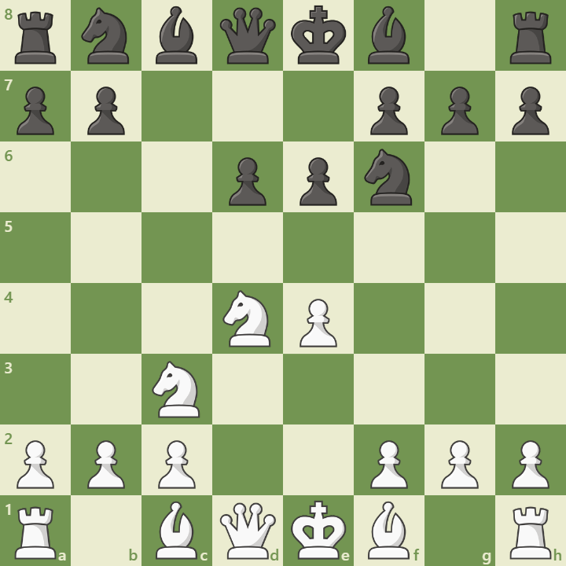

Opening Diagram

Position after 1.e4 c5 2.Nf3 d6 3.d4 cxd4 4.Nxd4 Nf6 5.Nc3 e6
Overview
The Sicilian Scheveningen is a flexible and resilient variation of the Sicilian Defense. It arises after 1.e4 c5 2.Nf3 d6 3.d4 cxd4 4.Nxd4 Nf6 5.Nc3 e6. Black builds a solid pawn structure with ...d6 and ...e6, delaying ...Nc6 and ...a6 to keep options open. This setup allows Black to respond dynamically to White’s plans.
Main Ideas
- Pawn structure: The ...e6 and ...d6 setup controls key central squares and prepares ...Be7 and ...O-O.
- Flexibility: Black can choose between ...Nc6, ...a6, or even ...b5 depending on White’s setup.
- Counterplay: Black often launches queenside play with ...b5 and ...Bb7 while keeping the center stable.
- White’s plans: White may play the Keres Attack (6.g4), English Attack (Be3, Qd2, f3), or Classical lines with Be2 and O-O.
Popular Variations
- Keres Attack: 6.g4 — aggressive kingside expansion
- English Attack: Be3, Qd2, f3 — setup for pawn storm
- Classical Scheveningen: Be2, O-O, f4 — strategic buildup
- Fischer-Sozin Attack: Bc4 — pressure on f7 and d5
Model Game: Kasparov vs Karpov
In their 1985 World Championship match, Kasparov used the Scheveningen to counter Karpov’s positional style. The game showcased dynamic pawn breaks and precise piece coordination.
View annotated game